<!DOCTYPE HTML>
<html lang="" >
    <head>
        <meta charset="UTF-8">
        <meta content="text/html; charset=utf-8" http-equiv="Content-Type">
        <title>RACChannel · GitBook</title>
        <meta http-equiv="X-UA-Compatible" content="IE=edge" />
        <meta name="description" content="">
        <meta name="generator" content="GitBook 3.2.3">
        
        
        
    
    <link rel="stylesheet" href="../../gitbook/style.css">

    
            
                
                <link rel="stylesheet" href="../../gitbook/gitbook-plugin-highlight/website.css">
                
            
                
                <link rel="stylesheet" href="../../gitbook/gitbook-plugin-search/search.css">
                
            
                
                <link rel="stylesheet" href="../../gitbook/gitbook-plugin-fontsettings/website.css">
                
            
        

    

    
        
    
        
    
        
    
        
    
        
    
        
    

        
    
    
    <meta name="HandheldFriendly" content="true"/>
    <meta name="viewport" content="width=device-width, initial-scale=1, user-scalable=no">
    <meta name="apple-mobile-web-app-capable" content="yes">
    <meta name="apple-mobile-web-app-status-bar-style" content="black">
    <link rel="apple-touch-icon-precomposed" sizes="152x152" href="../../gitbook/images/apple-touch-icon-precomposed-152.png">
    <link rel="shortcut icon" href="../../gitbook/images/favicon.ico" type="image/x-icon">

    
    <link rel="next" href="RACCommand.html" />
    
    

    </head>
    <body>
        
<div class="book">
    <div class="book-summary">
        
            
<div id="book-search-input" role="search">
    <input type="text" placeholder="Type to search" />
</div>

            
                <nav role="navigation">
                


<ul class="summary">
    
    

    

    
        
        
    
        <li class="chapter " data-level="1.1" data-path="../../">
            
                <a href="../../">
            
                    
                    iOS 开发
            
                </a>
            

            
            <ul class="articles">
                
    
        <li class="chapter " data-level="1.1.1" data-path="../../ObjC-Basic/">
            
                <a href="../../ObjC-Basic/">
            
                    
                    Objective-C 语言基础
            
                </a>
            

            
            <ul class="articles">
                
    
        <li class="chapter " data-level="1.1.1.1" data-path="../../ObjC-Basic/Class.html">
            
                <a href="../../ObjC-Basic/Class.html">
            
                    
                    类与对象
            
                </a>
            

            
        </li>
    
        <li class="chapter " data-level="1.1.1.2" data-path="../../ObjC-Basic/Block.html">
            
                <a href="../../ObjC-Basic/Block.html">
            
                    
                    Block 编程
            
                </a>
            

            
        </li>
    
        <li class="chapter " data-level="1.1.1.3" data-path="../../ObjC-Basic/Runtime.html">
            
                <a href="../../ObjC-Basic/Runtime.html">
            
                    
                    Objective-C Runtime
            
                </a>
            

            
        </li>
    
        <li class="chapter " data-level="1.1.1.4" data-path="../../ObjC-Basic/MM.html">
            
                <a href="../../ObjC-Basic/MM.html">
            
                    
                    Objective-C 内存管理
            
                </a>
            

            
        </li>
    
        <li class="chapter " data-level="1.1.1.5" data-path="../../ObjC-Basic/Runloop.html">
            
                <a href="../../ObjC-Basic/Runloop.html">
            
                    
                    Runloop
            
                </a>
            

            
        </li>
    

            </ul>
            
        </li>
    
        <li class="chapter " data-level="1.1.2" data-path="../../Cocoa-Touch/">
            
                <a href="../../Cocoa-Touch/">
            
                    
                    Cocoa Touch
            
                </a>
            

            
            <ul class="articles">
                
    
        <li class="chapter " data-level="1.1.2.1" data-path="../../Cocoa-Touch/Event-Handling.html">
            
                <a href="../../Cocoa-Touch/Event-Handling.html">
            
                    
                    事件处理
            
                </a>
            

            
        </li>
    
        <li class="chapter " data-level="1.1.2.2" data-path="../../Cocoa-Touch/UIApplication.html">
            
                <a href="../../Cocoa-Touch/UIApplication.html">
            
                    
                    UIApplication
            
                </a>
            

            
        </li>
    
        <li class="chapter " data-level="1.1.2.3" data-path="../../Cocoa-Touch/UIView-Basic.html">
            
                <a href="../../Cocoa-Touch/UIView-Basic.html">
            
                    
                    UIView
            
                </a>
            

            
        </li>
    
        <li class="chapter " data-level="1.1.2.4" data-path="../../Cocoa-Touch/UIViewController.html">
            
                <a href="../../Cocoa-Touch/UIViewController.html">
            
                    
                    UIViewController
            
                </a>
            

            
        </li>
    
        <li class="chapter " data-level="1.1.2.5" data-path="../../Cocoa-Touch/Animation.html">
            
                <a href="../../Cocoa-Touch/Animation.html">
            
                    
                    动画
            
                </a>
            

            
        </li>
    
        <li class="chapter " data-level="1.1.2.6" data-path="../../Cocoa-Touch/Network.html">
            
                <a href="../../Cocoa-Touch/Network.html">
            
                    
                    网络编程
            
                </a>
            

            
        </li>
    
        <li class="chapter " data-level="1.1.2.7" data-path="../../Cocoa-Touch/Multithreading.html">
            
                <a href="../../Cocoa-Touch/Multithreading.html">
            
                    
                    并发编程
            
                </a>
            

            
        </li>
    
        <li class="chapter " data-level="1.1.2.8" data-path="../../Cocoa-Touch/File-System.html">
            
                <a href="../../Cocoa-Touch/File-System.html">
            
                    
                    文件系统
            
                </a>
            

            
        </li>
    
        <li class="chapter " data-level="1.1.2.9" data-path="../../Cocoa-Touch/Design.html">
            
                <a href="../../Cocoa-Touch/Design.html">
            
                    
                    设计模式
            
                </a>
            

            
        </li>
    
        <li class="chapter " data-level="1.1.2.10" data-path="../../Cocoa-Touch/Performance.html">
            
                <a href="../../Cocoa-Touch/Performance.html">
            
                    
                    性能
            
                </a>
            

            
        </li>
    

            </ul>
            
        </li>
    
        <li class="chapter " data-level="1.1.3" data-path="../../Swift/">
            
                <a href="../../Swift/">
            
                    
                    Swift
            
                </a>
            

            
            <ul class="articles">
                
    
        <li class="chapter " data-level="1.1.3.1" data-path="../../Swift/Class.html">
            
                <a href="../../Swift/Class.html">
            
                    
                    类与对象
            
                </a>
            

            
        </li>
    
        <li class="chapter " data-level="1.1.3.2" data-path="../../Swift/Struct-And-Enum.html">
            
                <a href="../../Swift/Struct-And-Enum.html">
            
                    
                    结构体与枚举
            
                </a>
            

            
        </li>
    
        <li class="chapter " data-level="1.1.3.3" data-path="../../Swift/Function-And-Closure.html">
            
                <a href="../../Swift/Function-And-Closure.html">
            
                    
                    函数与闭包
            
                </a>
            

            
        </li>
    

            </ul>
            
        </li>
    
        <li class="chapter " data-level="1.1.4" data-path="../../Interview/">
            
                <a href="../../Interview/">
            
                    
                    面试问题
            
                </a>
            

            
            <ul class="articles">
                
    
        <li class="chapter " data-level="1.1.4.1" data-path="../../Interview/iOSInterviewQuestions/">
            
                <a href="../../Interview/iOSInterviewQuestions/">
            
                    
                    《招聘一个靠谱的iOS》
            
                </a>
            

            
            <ul class="articles">
                
    
        <li class="chapter " data-level="1.1.4.1.1" data-path="../../Interview/iOSInterviewQuestions/Volume-One/volume-one.html">
            
                <a href="../../Interview/iOSInterviewQuestions/Volume-One/volume-one.html">
            
                    
                    《招聘一个靠谱的iOS》(上)
            
                </a>
            

            
        </li>
    
        <li class="chapter " data-level="1.1.4.1.2" data-path="../../Interview/iOSInterviewQuestions/Volume-Two/volume-two.html">
            
                <a href="../../Interview/iOSInterviewQuestions/Volume-Two/volume-two.html">
            
                    
                    《招聘一个靠谱的iOS》(下)
            
                </a>
            

            
        </li>
    

            </ul>
            
        </li>
    
        <li class="chapter " data-level="1.1.4.2" data-path="../../interview/ZhiHu-QA/">
            
                <a href="../../interview/ZhiHu-QA/">
            
                    
                    关于一些 iOS 面试问题的解答
            
                </a>
            

            
        </li>
    
        <li class="chapter " data-level="1.1.4.3" data-path="../../interview/iOSDeveloperQA/">
            
                <a href="../../interview/iOSDeveloperQA/">
            
                    
                    iOS 开发面试问题
            
                </a>
            

            
        </li>
    
        <li class="chapter " data-level="1.1.4.4" data-path="../../interview/MXR-QA/">
            
                <a href="../../interview/MXR-QA/">
            
                    
                    MXR 面试问题
            
                </a>
            

            
        </li>
    

            </ul>
            
        </li>
    
        <li class="chapter " data-level="1.1.5" data-path="../">
            
                <a href="../">
            
                    
                    源码分析
            
                </a>
            

            
            <ul class="articles">
                
    
        <li class="chapter " data-level="1.1.5.1" data-path="../AFNetworking/AFNetworking_1.html">
            
                <a href="../AFNetworking/AFNetworking_1.html">
            
                    
                    AFNetworking
            
                </a>
            

            
            <ul class="articles">
                
    
        <li class="chapter " data-level="1.1.5.1.1" data-path="../AFNetworking/AFNetworking_2.html">
            
                <a href="../AFNetworking/AFNetworking_2.html">
            
                    
                    AFURLSessionManager
            
                </a>
            

            
        </li>
    
        <li class="chapter " data-level="1.1.5.1.2" data-path="../AFNetworking/AFNetworking_3.html">
            
                <a href="../AFNetworking/AFNetworking_3.html">
            
                    
                    AFURLSerialization
            
                </a>
            

            
        </li>
    
        <li class="chapter " data-level="1.1.5.1.3" data-path="../AFNetworking/AFNetworking_4.html">
            
                <a href="../AFNetworking/AFNetworking_4.html">
            
                    
                    AFNetworkReachabilityManager
            
                </a>
            

            
        </li>
    
        <li class="chapter " data-level="1.1.5.1.4" data-path="../AFNetworking/AFNetworking_5.html">
            
                <a href="../AFNetworking/AFNetworking_5.html">
            
                    
                    HTTPS
            
                </a>
            

            
        </li>
    

            </ul>
            
        </li>
    
        <li class="chapter " data-level="1.1.5.2" data-path="../Alamofire/">
            
                <a href="../Alamofire/">
            
                    
                    Alamofire
            
                </a>
            

            
        </li>
    
        <li class="chapter " data-level="1.1.5.3" data-path="../architecture/mvx.html">
            
                <a href="../architecture/mvx.html">
            
                    
                    architecture
            
                </a>
            

            
            <ul class="articles">
                
    
        <li class="chapter " data-level="1.1.5.3.1" data-path="../architecture/mvx-model.html">
            
                <a href="../architecture/mvx-model.html">
            
                    
                    MVX-Model
            
                </a>
            

            
        </li>
    
        <li class="chapter " data-level="1.1.5.3.2" data-path="../architecture/mvx-view.html">
            
                <a href="../architecture/mvx-view.html">
            
                    
                    MVX-View
            
                </a>
            

            
        </li>
    
        <li class="chapter " data-level="1.1.5.3.3" data-path="../architecture/mvx-controller.html">
            
                <a href="../architecture/mvx-controller.html">
            
                    
                    MVX-Controller
            
                </a>
            

            
        </li>
    

            </ul>
            
        </li>
    
        <li class="chapter " data-level="1.1.5.4" >
            
                <span>
            
                    
                    AsyncDisplayKit
            
                </span>
            

            
            <ul class="articles">
                
    
        <li class="chapter " data-level="1.1.5.4.1" data-path="../AsyncDisplayKit/ASDK_1.html">
            
                <a href="../AsyncDisplayKit/ASDK_1.html">
            
                    
                    提升界面的渲染性能
            
                </a>
            

            
        </li>
    
        <li class="chapter " data-level="1.1.5.4.2" data-path="../AsyncDisplayKit/ASDK_2.html">
            
                <a href="../AsyncDisplayKit/ASDK_2.html">
            
                    
                    布局算法
            
                </a>
            

            
        </li>
    
        <li class="chapter " data-level="1.1.5.4.3" data-path="../AsyncDisplayKit/ASDK_3.html">
            
                <a href="../AsyncDisplayKit/ASDK_3.html">
            
                    
                    预加载与智能预加载
            
                </a>
            

            
        </li>
    

            </ul>
            
        </li>
    
        <li class="chapter " data-level="1.1.5.5" >
            
                <span>
            
                    
                    BlocksKit
            
                </span>
            

            
            <ul class="articles">
                
    
        <li class="chapter " data-level="1.1.5.5.1" data-path="../BlocksKit/BlocksKit_1.html">
            
                <a href="../BlocksKit/BlocksKit_1.html">
            
                    
                    神奇的 BlocksKit (一)
            
                </a>
            

            
        </li>
    
        <li class="chapter " data-level="1.1.5.5.2" data-path="../BlocksKit/BlocksKit_2.html">
            
                <a href="../BlocksKit/BlocksKit_2.html">
            
                    
                    神奇的 BlocksKit (二)
            
                </a>
            

            
        </li>
    

            </ul>
            
        </li>
    
        <li class="chapter " data-level="1.1.5.6" data-path="../Blog/initialize-comments.html">
            
                <a href="../Blog/initialize-comments.html">
            
                    
                    Gitalk/Gitment
            
                </a>
            

            
        </li>
    
        <li class="chapter " data-level="1.1.5.7" >
            
                <span>
            
                    
                    CocoaPods
            
                </span>
            

            
            <ul class="articles">
                
    
        <li class="chapter " data-level="1.1.5.7.1" data-path="../CocoaPods/CocoaPods.html">
            
                <a href="../CocoaPods/CocoaPods.html">
            
                    
                    CocoaPods 都做了什么
            
                </a>
            

            
        </li>
    
        <li class="chapter " data-level="1.1.5.7.2" data-path="../CocoaPods/DSL.html">
            
                <a href="../CocoaPods/DSL.html">
            
                    
                    DSL 以及 DSL 的应用
            
                </a>
            

            
        </li>
    

            </ul>
            
        </li>
    
        <li class="chapter " data-level="1.1.5.8" >
            
                <span>
            
                    
                    Database
            
                </span>
            

            
            <ul class="articles">
                
    
        <li class="chapter " data-level="1.1.5.8.1" data-path="../Database/concurrency-control.html">
            
                <a href="../Database/concurrency-control.html">
            
                    
                    数据库并发控制
            
                </a>
            

            
        </li>
    
        <li class="chapter " data-level="1.1.5.8.2" data-path="../Database/dynamo.html">
            
                <a href="../Database/dynamo.html">
            
                    
                    分布式键值存储 Dynamo
            
                </a>
            

            
        </li>
    
        <li class="chapter " data-level="1.1.5.8.3" data-path="../Database/leveldb-bigtable.html">
            
                <a href="../Database/leveldb-bigtable.html">
            
                    
                    Bigtable 和 LevelDB 的实现
            
                </a>
            

            
        </li>
    
        <li class="chapter " data-level="1.1.5.8.4" data-path="../Database/mongodb-to-mysql.html">
            
                <a href="../Database/mongodb-to-mysql.html">
            
                    
                    MongoDB 迁移到 MySQL
            
                </a>
            

            
        </li>
    
        <li class="chapter " data-level="1.1.5.8.5" data-path="../Database/mongodb-wiredtiger.html">
            
                <a href="../Database/mongodb-wiredtiger.html">
            
                    
                    MongoDB 和 WiredTiger
            
                </a>
            

            
        </li>
    
        <li class="chapter " data-level="1.1.5.8.6" data-path="../Database/mysql.html">
            
                <a href="../Database/mysql.html">
            
                    
                    MySQL 和 InnoDB
            
                </a>
            

            
        </li>
    
        <li class="chapter " data-level="1.1.5.8.7" data-path="../Database/sql-index-intro.html">
            
                <a href="../Database/sql-index-intro.html">
            
                    
                    MySQL 索引设计概要
            
                </a>
            

            
        </li>
    
        <li class="chapter " data-level="1.1.5.8.8" data-path="../Database/sql-index-performance.html">
            
                <a href="../Database/sql-index-performance.html">
            
                    
                    MySQL 索引性能分析概要
            
                </a>
            

            
        </li>
    
        <li class="chapter " data-level="1.1.5.8.9" data-path="../Database/transaction.html">
            
                <a href="../Database/transaction.html">
            
                    
                    MySQL 中事务的实现
            
                </a>
            

            
        </li>
    

            </ul>
            
        </li>
    
        <li class="chapter " data-level="1.1.5.9" data-path="../DKNightVersion/DKNightVersion.html">
            
                <a href="../DKNightVersion/DKNightVersion.html">
            
                    
                    DKNightVersion
            
                </a>
            

            
        </li>
    
        <li class="chapter " data-level="1.1.5.10" >
            
                <span>
            
                    
                    FBRetainCycleDetector
            
                </span>
            

            
            <ul class="articles">
                
    
        <li class="chapter " data-level="1.1.5.10.1" data-path="../FBRetainCycleDetector/block.html">
            
                <a href="../FBRetainCycleDetector/block.html">
            
                    
                    block 如何持有对象
            
                </a>
            

            
        </li>
    
        <li class="chapter " data-level="1.1.5.10.2" data-path="../FBRetainCycleDetector/Obj-Associated.html">
            
                <a href="../FBRetainCycleDetector/Obj-Associated.html">
            
                    
                    Associated Object
            
                </a>
            

            
        </li>
    
        <li class="chapter " data-level="1.1.5.10.3" data-path="../FBRetainCycleDetector/Obj-Strong.html">
            
                <a href="../FBRetainCycleDetector/Obj-Strong.html">
            
                    
                    对象持有的强指针
            
                </a>
            

            
        </li>
    
        <li class="chapter " data-level="1.1.5.10.4" data-path="../FBRetainCycleDetector/retain_cycle.html">
            
                <a href="../FBRetainCycleDetector/retain_cycle.html">
            
                    
                    解决循环引用
            
                </a>
            

            
        </li>
    

            </ul>
            
        </li>
    
        <li class="chapter " data-level="1.1.5.11" data-path="../fishhook/fishhook.html">
            
                <a href="../fishhook/fishhook.html">
            
                    
                    fishhook
            
                </a>
            

            
        </li>
    
        <li class="chapter " data-level="1.1.5.12" data-path="../IQKeyboardManager/IQKeyboardManager.html">
            
                <a href="../IQKeyboardManager/IQKeyboardManager.html">
            
                    
                    IQKeyboardManager
            
                </a>
            

            
        </li>
    
        <li class="chapter " data-level="1.1.5.13" data-path="../KVOController/KVOController.html">
            
                <a href="../KVOController/KVOController.html">
            
                    
                    KVOController
            
                </a>
            

            
        </li>
    
        <li class="chapter " data-level="1.1.5.14" data-path="../libextobjc/libextobjc.html">
            
                <a href="../libextobjc/libextobjc.html">
            
                    
                    libextobjc
            
                </a>
            

            
        </li>
    
        <li class="chapter " data-level="1.1.5.15" data-path="../Masonry/Masonry.html">
            
                <a href="../Masonry/Masonry.html">
            
                    
                    Masonry
            
                </a>
            

            
        </li>
    
        <li class="chapter " data-level="1.1.5.16" data-path="../MBProgressHUD/">
            
                <a href="../MBProgressHUD/">
            
                    
                    MBProgressHUD
            
                </a>
            

            
        </li>
    
        <li class="chapter " data-level="1.1.5.17" data-path="../objc/">
            
                <a href="../objc/">
            
                    
                    objc
            
                </a>
            

            
            <ul class="articles">
                
    
        <li class="chapter " data-level="1.1.5.17.1" data-path="../objc/associated-obj.html">
            
                <a href="../objc/associated-obj.html">
            
                    
                    关联对象 AssociatedObject
            
                </a>
            

            
        </li>
    
        <li class="chapter " data-level="1.1.5.17.2" data-path="../objc/autoreleasepool.html">
            
                <a href="../objc/autoreleasepool.html">
            
                    
                    自动释放池
            
                </a>
            

            
        </li>
    
        <li class="chapter " data-level="1.1.5.17.3" data-path="../objc/black-box-retain-release.html">
            
                <a href="../objc/black-box-retain-release.html">
            
                    
                    黑箱中的 retain 和 release
            
                </a>
            

            
        </li>
    
        <li class="chapter " data-level="1.1.5.17.4" data-path="../objc/func-structure.html">
            
                <a href="../objc/func-structure.html">
            
                    
                    ObjC 中方法的结构
            
                </a>
            

            
        </li>
    
        <li class="chapter " data-level="1.1.5.17.5" data-path="../objc/hash.html">
            
                <a href="../objc/hash.html">
            
                    
                    哈希表的实现
            
                </a>
            

            
        </li>
    
        <li class="chapter " data-level="1.1.5.17.6" data-path="../objc/initialization.html">
            
                <a href="../objc/initialization.html">
            
                    
                    初始化对象
            
                </a>
            

            
        </li>
    
        <li class="chapter " data-level="1.1.5.17.7" data-path="../objc/isa.html">
            
                <a href="../objc/isa.html">
            
                    
                    isa
            
                </a>
            

            
        </li>
    
        <li class="chapter " data-level="1.1.5.17.8" data-path="../objc/lazy-initialize.html">
            
                <a href="../objc/lazy-initialize.html">
            
                    
                    懒惰的 initialize 方法
            
                </a>
            

            
        </li>
    
        <li class="chapter " data-level="1.1.5.17.9" data-path="../objc/load.html">
            
                <a href="../objc/load.html">
            
                    
                    load 方法
            
                </a>
            

            
        </li>
    
        <li class="chapter " data-level="1.1.5.17.10" data-path="../objc/msgSend.html">
            
                <a href="../objc/msgSend.html">
            
                    
                    消息传递
            
                </a>
            

            
        </li>
    

            </ul>
            
        </li>
    
        <li class="chapter " data-level="1.1.5.18" >
            
                <span>
            
                    
                    OHHTTPStubs
            
                </span>
            

            
            <ul class="articles">
                
    
        <li class="chapter " data-level="1.1.5.18.1" data-path="../OHHTTPStubs/intercept.html">
            
                <a href="../OHHTTPStubs/intercept.html">
            
                    
                    HTTP Intercept
            
                </a>
            

            
        </li>
    
        <li class="chapter " data-level="1.1.5.18.2" data-path="../OHHTTPStubs/mock.html">
            
                <a href="../OHHTTPStubs/mock.html">
            
                    
                    HTTP Mock
            
                </a>
            

            
        </li>
    

            </ul>
            
        </li>
    
        <li class="chapter " data-level="1.1.5.19" data-path="../ProtocolKit/ProtocolKit.html">
            
                <a href="../ProtocolKit/ProtocolKit.html">
            
                    
                    ProtocolKit
            
                </a>
            

            
        </li>
    
        <li class="chapter " data-level="1.1.5.20" data-path="../rack/rack.html">
            
                <a href="../rack/rack.html">
            
                    
                    rack
            
                </a>
            

            
            <ul class="articles">
                
    
        <li class="chapter " data-level="1.1.5.20.1" data-path="../rack/rack-thin.html">
            
                <a href="../rack/rack-thin.html">
            
                    
                    Thin 的事件驱动模型
            
                </a>
            

            
        </li>
    
        <li class="chapter " data-level="1.1.5.20.2" data-path="../rack/rack-unicorn.html">
            
                <a href="../rack/rack-unicorn.html">
            
                    
                    Unicorn 的多进程模型
            
                </a>
            

            
        </li>
    
        <li class="chapter " data-level="1.1.5.20.3" data-path="../rack/rack-webrik.html">
            
                <a href="../rack/rack-webrik.html">
            
                    
                    WEBrick 的实现
            
                </a>
            

            
        </li>
    

            </ul>
            
        </li>
    
        <li class="chapter " data-level="1.1.5.21" data-path="../Rails/activerecord.html">
            
                <a href="../Rails/activerecord.html">
            
                    
                    Rails
            
                </a>
            

            
        </li>
    
        <li class="chapter " data-level="1.1.5.22" >
            
                <span>
            
                    
                    ReactiveObjC
            
                </span>
            

            
            <ul class="articles">
                
    
        <li class="chapter active" data-level="1.1.5.22.1" data-path="RACChannel.html">
            
                <a href="RACChannel.html">
            
                    
                    RACChannel
            
                </a>
            

            
        </li>
    
        <li class="chapter " data-level="1.1.5.22.2" data-path="RACCommand.html">
            
                <a href="RACCommand.html">
            
                    
                    RACCommand
            
                </a>
            

            
        </li>
    
        <li class="chapter " data-level="1.1.5.22.3" data-path="RACDelegateProxy.html">
            
                <a href="RACDelegateProxy.html">
            
                    
                    RACDelegateProxy
            
                </a>
            

            
        </li>
    
        <li class="chapter " data-level="1.1.5.22.4" data-path="RACMulticastConnection.html">
            
                <a href="RACMulticastConnection.html">
            
                    
                    RACMulticastConnection
            
                </a>
            

            
        </li>
    
        <li class="chapter " data-level="1.1.5.22.5" data-path="RACScheduler.html">
            
                <a href="RACScheduler.html">
            
                    
                    RACScheduler
            
                </a>
            

            
        </li>
    
        <li class="chapter " data-level="1.1.5.22.6" data-path="RACSequence.html">
            
                <a href="RACSequence.html">
            
                    
                    RACSequence
            
                </a>
            

            
        </li>
    
        <li class="chapter " data-level="1.1.5.22.7" data-path="RACSignal.html">
            
                <a href="RACSignal.html">
            
                    
                    RACSignal
            
                </a>
            

            
        </li>
    
        <li class="chapter " data-level="1.1.5.22.8" data-path="RACSubject.html">
            
                <a href="RACSubject.html">
            
                    
                    RACSubject
            
                </a>
            

            
        </li>
    

            </ul>
            
        </li>
    
        <li class="chapter " data-level="1.1.5.23" >
            
                <span>
            
                    
                    Redis
            
                </span>
            

            
            <ul class="articles">
                
    
        <li class="chapter " data-level="1.1.5.23.1" data-path="../Redis/redis-cli.html">
            
                <a href="../Redis/redis-cli.html">
            
                    
                    命令处理
            
                </a>
            

            
        </li>
    
        <li class="chapter " data-level="1.1.5.23.2" data-path="../Redis/redis-eventloop.html">
            
                <a href="../Redis/redis-eventloop.html">
            
                    
                    事件循环
            
                </a>
            

            
        </li>
    
        <li class="chapter " data-level="1.1.5.23.3" data-path="../Redis/redis-io-multiplexing.html">
            
                <a href="../Redis/redis-io-multiplexing.html">
            
                    
                    I/O 多路复用
            
                </a>
            

            
        </li>
    

            </ul>
            
        </li>
    
        <li class="chapter " data-level="1.1.5.24" data-path="../Ruby/Ruby.html">
            
                <a href="../Ruby/Ruby.html">
            
                    
                    Ruby
            
                </a>
            

            
        </li>
    
        <li class="chapter " data-level="1.1.5.25" data-path="../SDWebImage/">
            
                <a href="../SDWebImage/">
            
                    
                    SDWebImage
            
                </a>
            

            
        </li>
    

            </ul>
            
        </li>
    
        <li class="chapter " data-level="1.1.6" data-path="../../More.html">
            
                <a href="../../More.html">
            
                    
                    更多资料
            
                </a>
            

            
        </li>
    

            </ul>
            
        </li>
    

    

    <li class="divider"></li>

    <li>
        <a href="https://www.gitbook.com" target="blank" class="gitbook-link">
            Published with GitBook
        </a>
    </li>
</ul>


                </nav>
            
        
    </div>

    <div class="book-body">
        
            <div class="body-inner">
                
                    

<div class="book-header" role="navigation">
    

    <!-- Title -->
    <h1>
        <i class="fa fa-circle-o-notch fa-spin"></i>
        <a href="../.." >RACChannel</a>
    </h1>
</div>


                    <div class="page-wrapper" tabindex="-1" role="main">
                        <div class="page-inner">
                            
<div id="book-search-results">
    <div class="search-noresults">
    
                                <section class="normal markdown-section">
                                
                                <h1 id="rac-&#x4E2D;&#x7684;&#x53CC;&#x5411;&#x6570;&#x636E;&#x7ED1;&#x5B9A;-racchannel">RAC &#x4E2D;&#x7684;&#x53CC;&#x5411;&#x6570;&#x636E;&#x7ED1;&#x5B9A; RACChannel</h1>
<p>&#x4E4B;&#x524D;&#x8BB2;&#x8FC7;&#x4E86; ReactiveCocoa &#x4E2D;&#x7684;&#x4E00;&#x5BF9;&#x4E00;&#x7684;&#x5355;&#x5411;&#x6570;&#x636E;&#x6D41; <code>RACSignal</code> &#x548C;&#x4E00;&#x5BF9;&#x591A;&#x7684;&#x5355;&#x5411;&#x6570;&#x636E;&#x6D41; <code>RACMulticastConnection</code>&#xFF0C;&#x8FD9;&#x4E00;&#x7BC7;&#x6587;&#x7AE0;&#x5206;&#x6790;&#x7684;&#x662F;&#x4E00;&#x5BF9;&#x4E00;&#x7684;&#x53CC;&#x5411;&#x6570;&#x636E;&#x6D41; <code>RACChannel</code>&#x3002;</p>
<p>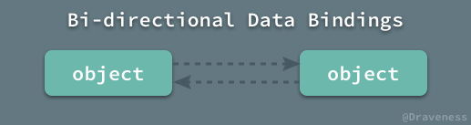</p>
<p><code>RACChannel</code> &#x5176;&#x5B9E;&#x662F;&#x4E00;&#x4E2A;&#x76F8;&#x5BF9;&#x6BD4;&#x8F83;&#x590D;&#x6742;&#x7684;&#x7C7B;&#xFF0C;&#x4F46;&#x662F;&#xFF0C;&#x5BF9;&#x5176;&#x6709;&#x4E00;&#x5B9A;&#x4E86;&#x89E3;&#x4E4B;&#x540E;&#x5408;&#x7406;&#x8FD0;&#x7528;&#x7684;&#x8BDD;&#xFF0C;&#x4F1A;&#x5728;&#x5408;&#x9002;&#x7684;&#x4E1A;&#x52A1;&#x4E2D;&#x63D0;&#x4F9B;&#x975E;&#x5E38;&#x5F3A;&#x5927;&#x7684;&#x652F;&#x6301;&#x80FD;&#x591F;&#x6781;&#x5927;&#x7684;&#x7B80;&#x5316;&#x4E1A;&#x52A1;&#x4EE3;&#x7801;&#x3002;</p>
<h2 id="racchannel-&#x7B80;&#x4ECB;">RACChannel &#x7B80;&#x4ECB;</h2>
<p><code>RACChannel</code> &#x53EF;&#x4EE5;&#x88AB;&#x7406;&#x89E3;&#x4E3A;&#x4E00;&#x4E2A;&#x53CC;&#x5411;&#x7684;&#x8FDE;&#x63A5;&#xFF0C;&#x8FD9;&#x4E2A;&#x8FDE;&#x63A5;&#x7684;&#x4E24;&#x7AEF;&#x90FD;&#x662F; <code>RACSignal</code> &#x5B9E;&#x4F8B;&#xFF0C;&#x5B83;&#x4EEC;&#x53EF;&#x4EE5;&#x5411;&#x5F7C;&#x6B64;&#x53D1;&#x9001;&#x6D88;&#x606F;&#xFF0C;&#x5982;&#x679C;&#x6211;&#x4EEC;&#x5728;&#x89C6;&#x56FE;&#x548C;&#x6A21;&#x578B;&#x4E4B;&#x95F4;&#x901A;&#x8FC7; <code>RACChannel</code> &#x5EFA;&#x7ACB;&#x8FD9;&#x6837;&#x7684;&#x8FDE;&#x63A5;&#xFF1A;</p>
<p>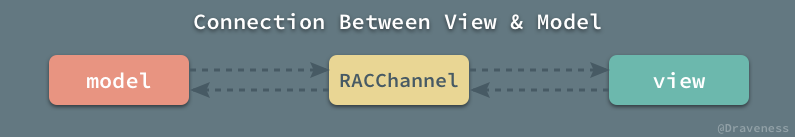</p>
<p>&#x90A3;&#x4E48;&#x4ECE;&#x6A21;&#x578B;&#x53D1;&#x51FA;&#x7684;&#x6D88;&#x606F;&#xFF0C;&#x6700;&#x540E;&#x4F1A;&#x53D1;&#x9001;&#x5230;&#x89C6;&#x56FE;&#x4E0A;&#xFF1B;&#x53CD;&#x4E4B;&#xFF0C;&#x7528;&#x6237;&#x5BF9;&#x89C6;&#x56FE;&#x8FDB;&#x884C;&#x7684;&#x64CD;&#x4F5C;&#x6700;&#x540E;&#x4E5F;&#x4F1A;&#x4F53;&#x73B0;&#x5728;&#x6A21;&#x578B;&#x4E0A;&#x3002;&#x8FD9;&#x79CD;&#x901A;&#x4FE1;&#x65B9;&#x5F0F;&#x7684;&#x5B9E;&#x73B0;&#x662F;&#x57FA;&#x4E8E;&#x4FE1;&#x53F7;&#x7684;&#xFF0C;<code>RACChannel</code> &#x5185;&#x90E8;&#x5C01;&#x88C5;&#x4E86;&#x4E24;&#x4E2A; <code>RACChannelTerminal</code> &#x5BF9;&#x8C61;&#xFF0C;&#x5B83;&#x4EEC;&#x90FD;&#x662F; <code>RACSignal</code> &#x7684;&#x5B50;&#x7C7B;&#xFF1A;</p>
<p>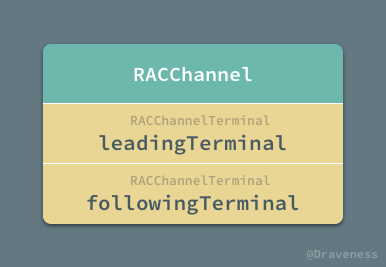</p>
<p>&#x5BF9;&#x6A21;&#x578B;&#x8FDB;&#x884C;&#x7684;&#x64CD;&#x4F5C;&#x6700;&#x540E;&#x90FD;&#x4F1A;&#x53D1;&#x9001;&#x7ED9; <code>leadingTerminal</code> &#x518D;&#x901A;&#x8FC7;&#x5185;&#x90E8;&#x7684;&#x5B9E;&#x73B0;&#x53D1;&#x9001;&#x7ED9; <code>followingTerminal</code>&#xFF0C;&#x7531;&#x4E8E;&#x89C6;&#x56FE;&#x662F; <code>followingTerminal</code> &#x7684;&#x8BA2;&#x9605;&#x8005;&#xFF0C;&#x6240;&#x4EE5;&#x6D88;&#x606F;&#x6700;&#x7EC8;&#x4F1A;&#x53D1;&#x9001;&#x5230;&#x89C6;&#x56FE;&#x4E0A;&#x3002;</p>
<p>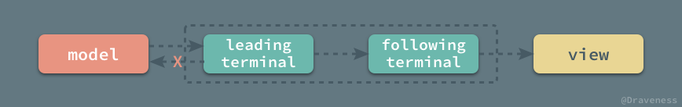</p>
<p>&#x5728;&#x4E0A;&#x8FF0;&#x60C5;&#x51B5;&#x4E0B;&#xFF0C;<code>leadingTerminal</code> &#x7684;&#x8BA2;&#x9605;&#x8005;&#xFF08;&#x6A21;&#x578B;&#xFF09;&#x5E76;&#x4E0D;&#x4F1A;&#x6536;&#x5230;&#x6D88;&#x606F;&#xFF0C;&#x5B83;&#x7684;&#x8BA2;&#x9605;&#x8005;&#xFF08;&#x89C6;&#x56FE;&#xFF09;&#x53EA;&#x4F1A;&#x5728; <code>followingTerminal</code> &#x6536;&#x5230;&#x6D88;&#x606F;&#x65F6;&#x624D;&#x4F1A;&#x63A5;&#x53D7;&#x5230;&#x65B0;&#x7684;&#x503C;&#x3002;</p>
<p>&#x540C;&#x65F6;&#xFF0C;<code>RACChannel</code> &#x7684;&#x7ED1;&#x5B9A;&#x90FD;&#x662F;&#x53CC;&#x5411;&#x7684;&#xFF0C;&#x89C6;&#x56FE;&#x6536;&#x5230;&#x7528;&#x6237;&#x7684;&#x52A8;&#x4F5C;&#xFF0C;&#x4F8B;&#x5982;&#x70B9;&#x51FB;&#x7B49;&#x4E8B;&#x4EF6;&#x65F6;&#xFF0C;&#x4F1A;&#x5C06;&#x6D88;&#x606F;&#x53D1;&#x9001;&#x7ED9; <code>followingTerminal</code>&#xFF0C;&#x800C; <code>followingTerminal</code> &#x5E76;<strong>&#x4E0D;&#x4F1A;</strong>&#x5C06;&#x6D88;&#x606F;&#x53D1;&#x9001;&#x7ED9;&#x81EA;&#x5DF1;&#x7684;&#x8BA2;&#x9605;&#x8005;&#xFF08;&#x89C6;&#x56FE;&#xFF09;&#xFF0C;&#x800C;&#x662F;&#x4F1A;&#x53D1;&#x9001;&#x7ED9; <code>leadingTerminal</code>&#xFF0C;&#x5E76;&#x901A;&#x8FC7; <code>leadingTerminal</code> &#x53D1;&#x9001;&#x7ED9;&#x5176;&#x8BA2;&#x9605;&#x8005;&#xFF0C;&#x5373;&#x6A21;&#x578B;&#x3002;</p>
<p>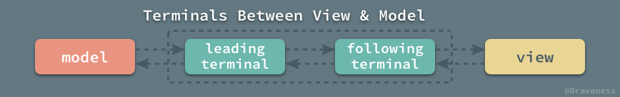</p>
<p>&#x4E0A;&#x56FE;&#x63CF;&#x8FF0;&#x4E86;&#x4FE1;&#x606F;&#x5728; <code>RACChannel</code> &#x4E4B;&#x95F4;&#x7684;&#x4F20;&#x9012;&#x8FC7;&#x7A0B;&#xFF0C;&#x65E0;&#x8BBA;&#x662F;&#x6A21;&#x578B;&#x5C5E;&#x6027;&#x7684;&#x6539;&#x53D8;&#x8FD8;&#x662F;&#x7528;&#x6237;&#x5BF9;&#x89C6;&#x56FE;&#x8FDB;&#x884C;&#x7684;&#x64CD;&#x4F5C;&#x90FD;&#x4F1A;&#x901A;&#x8FC7;&#x8FD9;&#x4E24;&#x4E2A; <code>RACChannelTerminal</code> &#x4F20;&#x9012;&#x5230;&#x53E6;&#x4E00;&#x7AEF;&#xFF1B;&#x540C;&#x65F6;&#xFF0C;&#x7531;&#x4E8E;&#x6D88;&#x606F;&#x4E0D;&#x4F1A;&#x53D1;&#x9001;&#x7ED9;&#x81EA;&#x5DF1;&#x7684;&#x8BA2;&#x9605;&#x8005;&#xFF0C;&#x6240;&#x4EE5;&#x4E0D;&#x4F1A;&#x9020;&#x6210;&#x4FE1;&#x606F;&#x7684;&#x5FAA;&#x73AF;&#x53D1;&#x9001;&#x3002;</p>
<h2 id="racchannel-&#x548C;-racchannelterminal">RACChannel &#x548C; RACChannelTerminal</h2>
<p><code>RACChannel</code> &#x548C; <code>RACChannelTerminal</code> &#x7684;&#x5173;&#x7CFB;&#x975E;&#x5E38;&#x5BC6;&#x5207;&#xFF0C;&#x524D;&#x8005;&#x53EF;&#x4EE5;&#x7406;&#x89E3;&#x4E3A;&#x4E00;&#x4E2A;&#x7F51;&#x7EDC;&#x8FDE;&#x63A5;&#xFF0C;&#x540E;&#x8005;&#x53EF;&#x4EE5;&#x7406;&#x89E3;&#x4E3A; <code>socket</code>&#xFF0C;&#x8868;&#x793A;&#x7F51;&#x7EDC;&#x8FDE;&#x63A5;&#x7684;&#x4E00;&#x7AEF;&#xFF0C;&#x4E0B;&#x56FE;&#x63CF;&#x8FF0;&#x4E86; <code>RACChannel</code> &#x4E0E;&#x7F51;&#x7EDC;&#x8FDE;&#x63A5;&#x4E2D;&#x6982;&#x5FF5;&#x7684;&#x4E00;&#x4E00;&#x5BF9;&#x5E94;&#x5173;&#x7CFB;&#x3002;</p>
<p>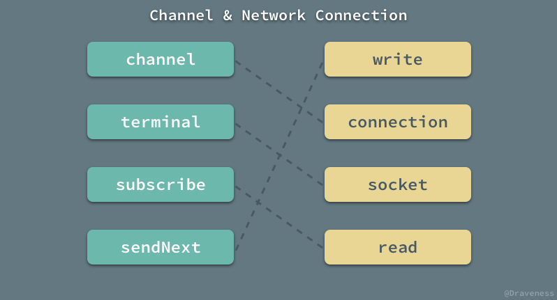</p>
<ul>
<li>&#x5728;&#x5BA2;&#x6237;&#x7AEF;&#x4F7F;&#x7528; <code>write</code> &#x5411; <code>socket</code> &#x4E2D;&#x53D1;&#x9001;&#x6D88;&#x606F;&#x65F6;&#xFF0C;<code>socket</code> &#x7684;&#x6301;&#x6709;&#x8005;&#x5BA2;&#x6237;&#x7AEF;&#x4E0D;&#x4F1A;&#x6536;&#x5230;&#x6D88;&#x606F;&#xFF0C;&#x53EA;&#x6709;&#x5728; <code>socket</code> &#x4E0A;&#x8C03;&#x7528; <code>read</code> &#x7684;&#x670D;&#x52A1;&#x7AEF;&#x624D;&#x4F1A;&#x6536;&#x5230;&#x6D88;&#x606F;&#xFF1B;&#x53CD;&#x4E4B;&#x4EA6;&#x7136;&#x3002;</li>
<li>&#x5728;&#x6A21;&#x578B;&#x4F7F;&#x7528; <code>sendNext</code> &#x5411;<code>leadingTerminal</code> &#x4E2D;&#x53D1;&#x9001;&#x6D88;&#x606F;&#x65F6;&#xFF0C;<code>leadingTerminal</code> &#x7684;&#x8BA2;&#x9605;&#x8005;&#x6A21;&#x578B;&#x4E0D;&#x4F1A;&#x6536;&#x5230;&#x6D88;&#x606F;&#xFF0C;&#x53EA;&#x6709;&#x5728; <code>followingTerminal</code> &#x4E0A;&#x8C03;&#x7528; <code>subscribe</code> &#x7684;&#x89C6;&#x56FE;&#x624D;&#x4F1A;&#x6536;&#x5230;&#x6D88;&#x606F;&#xFF1B;&#x53CD;&#x4E4B;&#x4EA6;&#x7136;&#x3002;</li>
</ul>
<h3 id="racchannelterminal-&#x7684;&#x5B9E;&#x73B0;">RACChannelTerminal &#x7684;&#x5B9E;&#x73B0;</h3>
<p>&#x4E3A;&#x4EC0;&#x4E48;&#x5411; <code>RACChannelTerminal</code> &#x53D1;&#x9001;&#x6D88;&#x606F;&#xFF0C;&#x5B83;&#x7684;&#x8BA2;&#x9605;&#x8005;&#x83B7;&#x53D6;&#x4E0D;&#x5230;&#xFF1F;&#x5148;&#x6765;&#x770B;&#x4E00;&#x4E0B;&#x5B83;&#x5728;&#x5934;&#x6587;&#x4EF6;&#x4E2D;&#x7684;&#x5B9A;&#x4E49;&#xFF1A;</p>
<pre><code class="lang-objectivec"><span class="hljs-class"><span class="hljs-keyword">@interface</span> <span class="hljs-title">RACChannelTerminal</span> : <span class="hljs-title">RACSignal</span> &lt;<span class="hljs-title">RACSubscriber</span>&gt;</span>
<span class="hljs-keyword">@end</span>
</code></pre>
<p><code>RACChannelTerminal</code> &#x662F;&#x4E00;&#x4E2A;&#x4FE1;&#x53F7;&#x7684;&#x5B50;&#x7C7B;&#xFF0C;&#x540C;&#x65F6;&#x5B83;&#x8FD8;&#x9075;&#x5FAA;&#x4E86; <code>RACSubscriber</code> &#x534F;&#x8BAE;&#xFF0C;&#x4E5F;&#x5C31;&#x662F;&#x53EF;&#x4EE5;&#x5411;&#x5B83;&#x8C03;&#x7528; <code>-sendNext:</code> &#x7B49;&#x65B9;&#x6CD5;&#xFF1B;<code>RAChannelTerminal</code> &#x4E2D;&#x6301;&#x6709;&#x4E86;&#x4E24;&#x4E2A;&#x5BF9;&#x8C61;&#xFF1A;</p>
<p>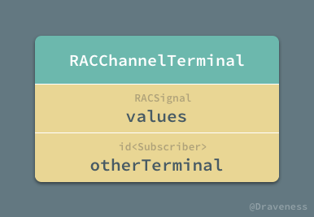</p>
<p>&#x5728;&#x521D;&#x59CB;&#x5316;&#x65F6;&#xFF0C;&#x9700;&#x8981;&#x4F20;&#x5165; <code>values</code> &#x548C; <code>otherTerminal</code> &#x8FD9;&#x4E24;&#x4E2A;&#x5C5E;&#x6027;&#xFF0C;&#x5176;&#x4E2D; <code>values</code> &#x8868;&#x793A;&#x5F53;&#x524D;&#x65AD;&#x70B9;&#xFF0C;<code>otherTerminal</code> &#x8868;&#x793A;&#x8FDC;&#x7A0B;&#x7AEF;&#x70B9;&#xFF1A;</p>
<pre><code class="lang-objectivec">- (instancetype)initWithValues:(RACSignal *)values otherTerminal:(<span class="hljs-keyword">id</span>&lt;RACSubscriber&gt;)otherTerminal {
    <span class="hljs-keyword">self</span> = [<span class="hljs-keyword">super</span> init];
    _values = values;
    _otherTerminal = otherTerminal;
    <span class="hljs-keyword">return</span> <span class="hljs-keyword">self</span>;
}
</code></pre>
<p>&#x5F53;&#x7136;&#xFF0C;&#x4F5C;&#x4E3A; <code>RACSignal</code> &#x7684;&#x5B50;&#x7C7B;&#xFF0C;<code>RACChannelTerminal</code> &#x5FC5;&#x987B;&#x8986;&#x5199; <code>-subscribe:</code> &#x65B9;&#x6CD5;&#xFF1A;</p>
<pre><code class="lang-objectivec">- (RACDisposable *)subscribe:(<span class="hljs-keyword">id</span>&lt;RACSubscriber&gt;)subscriber {
    <span class="hljs-keyword">return</span> [<span class="hljs-keyword">self</span>.values subscribe:subscriber];
}
</code></pre>
<p>&#x5728;&#x8BA2;&#x9605;&#x8005;&#x8C03;&#x7528; <code>-subscribeNext:</code> &#x7B49;&#x65B9;&#x6CD5;&#x53D1;&#x8D77;&#x8BA2;&#x9605;&#x65F6;&#xFF0C;&#x5B9E;&#x9645;&#x4E0A;&#x8BA2;&#x9605;&#x7684;&#x662F;&#x5F53;&#x524D;&#x7AEF;&#x70B9;&#xFF1B;&#x5982;&#x679C;&#x5411;&#x5F53;&#x524D;&#x7AEF;&#x70B9;&#x53D1;&#x9001;&#x6D88;&#x606F;&#xFF0C;&#x4F1A;&#x88AB;&#x8F6C;&#x53D1;&#x5230;&#x8FDC;&#x7A0B;&#x7AEF;&#x70B9;&#x4E0A;&#xFF0C;&#x800C;&#x8FD9;&#x4E5F;&#x5C31;&#x662F;&#x5F53;&#x524D;&#x7AEF;&#x70B9;&#x7684;&#x8BA2;&#x9605;&#x8005;&#x4E0D;&#x4F1A;&#x63A5;&#x6536;&#x5230;&#x5411;&#x5F53;&#x524D;&#x7AEF;&#x70B9;&#x53D1;&#x9001;&#x6D88;&#x606F;&#x7684;&#x539F;&#x56E0;&#xFF1A;</p>
<pre><code class="lang-objectivec">- (<span class="hljs-keyword">void</span>)sendNext:(<span class="hljs-keyword">id</span>)value {
    [<span class="hljs-keyword">self</span>.otherTerminal sendNext:value];
}
- (<span class="hljs-keyword">void</span>)sendError:(<span class="hljs-built_in">NSError</span> *)error {
    [<span class="hljs-keyword">self</span>.otherTerminal sendError:error];
}
- (<span class="hljs-keyword">void</span>)sendCompleted {
    [<span class="hljs-keyword">self</span>.otherTerminal sendCompleted];
}
</code></pre>
<h3 id="racchannel-&#x7684;&#x521D;&#x59CB;&#x5316;">RACChannel &#x7684;&#x521D;&#x59CB;&#x5316;</h3>
<p>&#x6211;&#x4EEC;&#x5728;&#x4EFB;&#x4F55;&#x60C5;&#x51B5;&#x4E0B;&#x90FD;&#x4E0D;&#x5E94;&#x8BE5;&#x76F4;&#x63A5;&#x4F7F;&#x7528; <code>-init</code> &#x65B9;&#x6CD5;&#x521D;&#x59CB;&#x5316; <code>RACChannelTerminal</code> &#x7684;&#x5B9E;&#x4F8B;&#xFF0C;&#x800C;&#x662F;&#x5E94;&#x8BE5;&#x4EE5;&#x521B;&#x5EFA; <code>RACChannel</code> &#x7684;&#x65B9;&#x5F0F;&#x751F;&#x6210;&#x5B83;&#xFF1A;</p>
<pre><code class="lang-objectivec">- (instancetype)init {
    <span class="hljs-keyword">self</span> = [<span class="hljs-keyword">super</span> init];

    RACReplaySubject *leadingSubject = [RACReplaySubject replaySubjectWithCapacity:<span class="hljs-number">0</span>];
    RACReplaySubject *followingSubject = [RACReplaySubject replaySubjectWithCapacity:<span class="hljs-number">1</span>];

    [[leadingSubject ignoreValues] subscribe:followingSubject];
    [[followingSubject ignoreValues] subscribe:leadingSubject];

    _leadingTerminal = [[RACChannelTerminal alloc] initWithValues:leadingSubject otherTerminal:followingSubject];
    _followingTerminal = [[RACChannelTerminal alloc] initWithValues:followingSubject otherTerminal:leadingSubject];

    <span class="hljs-keyword">return</span> <span class="hljs-keyword">self</span>;
}
</code></pre>
<p>&#x4E24;&#x4E2A; <code>RACChannelTerminal</code> &#x4E2D;&#x5305;&#x88C5;&#x7684;&#x5176;&#x5B9E;&#x662F;&#x4E24;&#x4E2A; <code>RACSubject</code> &#x70ED;&#x4FE1;&#x53F7;&#xFF0C;&#x5B83;&#x4EEC;&#x65E2;&#x53EF;&#x4EE5;&#x4F5C;&#x4E3A;&#x8BA2;&#x9605;&#x8005;&#xFF0C;&#x4E5F;&#x53EF;&#x4EE5;&#x63A5;&#x6536;&#x5176;&#x4ED6;&#x5BF9;&#x8C61;&#x53D1;&#x9001;&#x7684;&#x6D88;&#x606F;&#xFF1B;&#x6211;&#x4EEC;&#x5E76;&#x4E0D;&#x5E0C;&#x671B; <code>leadingSubject</code> &#x6709;&#x4EFB;&#x4F55;&#x7684;&#x521D;&#x59CB;&#x503C;&#xFF0C;&#x4F46;&#x662F;&#x6211;&#x4EEC;&#x9700;&#x8981; <code>error</code> &#x548C; <code>completed</code> &#x4FE1;&#x606F;&#x53EF;&#x4EE5;&#x88AB;&#x91CD;&#x64AD;&#x3002;</p>
<p>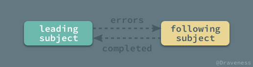</p>
<p>&#x901A;&#x8FC7; <code>-ignoreValues</code> &#x548C; <code>-subscribe:</code> &#x65B9;&#x6CD5;&#xFF0C;<code>leadingSubject</code> &#x548C; <code>followingSubject</code> &#x4E24;&#x4E2A;&#x70ED;&#x4FE1;&#x53F7;&#x4E2D;&#x4EA7;&#x751F;&#x7684;&#x9519;&#x8BEF;&#x4F1A;&#x4E92;&#x76F8;&#x53D1;&#x9001;&#xFF0C;&#x8FD9;&#x662F;&#x4E3A;&#x4E86;&#x9632;&#x6B62;&#x8FDE;&#x63A5;&#x7684;&#x4E24;&#x7AEF;&#x4E00;&#x8FB9;&#x53D1;&#x751F;&#x4E86;&#x9519;&#x8BEF;&#xFF0C;&#x53E6;&#x4E00;&#x8FB9;&#x8FD8;&#x7EE7;&#x7EED;&#x5DE5;&#x4F5C;&#x7684;&#x60C5;&#x51B5;&#x7684;&#x51FA;&#x73B0;&#x3002;</p>
<p>&#x5728;&#x521D;&#x59CB;&#x5316;&#x65B9;&#x6CD5;&#x7684;&#x6700;&#x540E;&#xFF0C;&#x751F;&#x6210;&#x4E24;&#x4E2A; <code>RACChannelTerminal</code> &#x5B9E;&#x4F8B;&#x7684;&#x8FC7;&#x7A0B;&#x5C31;&#x4E0D;&#x591A;&#x8BF4;&#x4E86;&#x3002;</p>
<h2 id="racchannel-&#x4E0E;-uikit-&#x7EC4;&#x4EF6;">RACChannel &#x4E0E; UIKit &#x7EC4;&#x4EF6;</h2>
<p>&#x5982;&#x679C;&#x5728;&#x6574;&#x4E2A; ReactiveCocoa &#x5DE5;&#x7A0B;&#x4E2D;&#x641C;&#x7D22; <code>RACChannel</code>&#xFF0C;&#x4F60;&#x4F1A;&#x53D1;&#x73B0;&#x4EE5;&#x4E0B;&#x7684; UIKit &#x7EC4;&#x4EF6;&#x90FD;&#x4E0E; <code>RACChannel</code> &#x6709;&#x7740;&#x975E;&#x5E38;&#x5BC6;&#x5207;&#x7684;&#x5173;&#x7CFB;&#xFF1A;</p>
<p>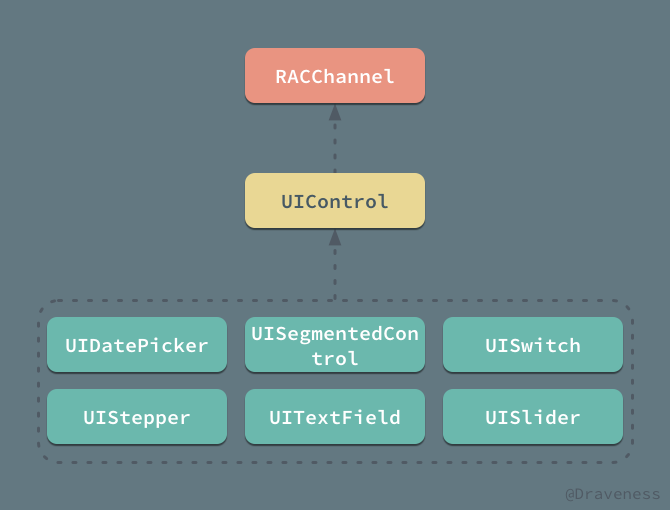</p>
<p>UIKit &#x4E2D;&#x7684;&#x8FD9;&#x4E9B;&#x7EC4;&#x4EF6;&#x90FD;&#x63D0;&#x4F9B;&#x4E86;&#x4F7F;&#x7528; <code>RACChannel</code> &#x7684;&#x63A5;&#x53E3;&#xFF0C;&#x7528;&#x4EE5;&#x964D;&#x4F4E;&#x6570;&#x636E;&#x53CC;&#x5411;&#x7ED1;&#x5B9A;&#x7684;&#x590D;&#x6742;&#x5EA6;&#xFF0C;&#x6211;&#x4EEC;&#x4EE5; <code>UITextField</code> &#x4E3A;&#x4F8B;&#xFF0C;&#x5B83;&#x5728;&#x5206;&#x7C7B;&#x7684;&#x63A5;&#x53E3;&#x4E2D;&#x63D0;&#x4F9B;&#x4E86; <code>rac_newTextChannel</code> &#x65B9;&#x6CD5;&#xFF1A;</p>
<pre><code class="lang-objectivec">- (RACChannelTerminal *)rac_newTextChannel {
    <span class="hljs-keyword">return</span> [<span class="hljs-keyword">self</span> rac_channelForControlEvents:<span class="hljs-built_in">UIControlEventAllEditingEvents</span> key:@keypath(<span class="hljs-keyword">self</span>.text) nilValue:<span class="hljs-string">@&quot;&quot;</span>];
}
</code></pre>
<p>&#x4E0A;&#x8FF0;&#x65B9;&#x6CD5;&#x7528;&#x4E8E;&#x8FD4;&#x56DE;&#x4E00;&#x4E2A;&#x4E00;&#x7AEF;&#x7ED1;&#x5B9A; <code>UIControlEventAllEditingEvents</code> &#x4E8B;&#x4EF6;&#x7684; <code>RACChannelTerminal</code> &#x5BF9;&#x8C61;&#x3002;</p>
<p>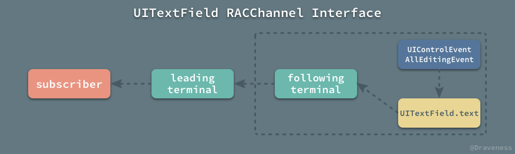</p>
<p><code>UIControlEventAllEditingEvents</code> &#x4E8B;&#x4EF6;&#x53D1;&#x751F;&#x65F6;&#xFF0C;&#x5B83;&#x4F1A;&#x5C06;&#x81EA;&#x5DF1;&#x7684; <code>text</code> &#x5C5E;&#x6027;&#x4F5C;&#x4E3A;&#x4FE1;&#x53F7;&#x53D1;&#x9001;&#x5230; <code>followingTerminal -&gt; leadingTerminal</code> &#x7BA1;&#x9053;&#x4E2D;&#xFF0C;&#x6700;&#x540E;&#x53D1;&#x9001;&#x7ED9; <code>leadingTerminal</code> &#x7684;&#x8BA2;&#x9605;&#x8005;&#x3002;</p>
<p>&#x5728; <code>rac_newTextChannel</code> &#x4E2D;&#x8C03;&#x7528;&#x7684;&#x65B9;&#x6CD5; <code>-rac_channelForControlEvents:key:nilValue:</code> &#x662F;&#x4E00;&#x4E2A; <code>UIControl</code> &#x7684;&#x79C1;&#x6709;&#x65B9;&#x6CD5;&#xFF1A;</p>
<pre><code class="lang-objectivec">- (RACChannelTerminal *)rac_channelForControlEvents:(<span class="hljs-built_in">UIControlEvents</span>)controlEvents key:(<span class="hljs-built_in">NSString</span> *)key nilValue:(<span class="hljs-keyword">id</span>)nilValue {
    key = [key <span class="hljs-keyword">copy</span>];
    RACChannel *channel = [[RACChannel alloc] init];

    RACSignal *eventSignal = [[[<span class="hljs-keyword">self</span>
        rac_signalForControlEvents:controlEvents]
        mapReplace:key]
        takeUntil:[[channel.followingTerminal
            ignoreValues]
            catchTo:RACSignal.empty]];
    [[<span class="hljs-keyword">self</span>
        rac_liftSelector:<span class="hljs-keyword">@selector</span>(valueForKey:) withSignals:eventSignal, <span class="hljs-literal">nil</span>]
        subscribe:channel.followingTerminal];

    RACSignal *valuesSignal = [channel.followingTerminal
        map:^(<span class="hljs-keyword">id</span> value) {
            <span class="hljs-keyword">return</span> value ?: nilValue;
        }];
    [<span class="hljs-keyword">self</span> rac_liftSelector:<span class="hljs-keyword">@selector</span>(setValue:forKey:) withSignals:valuesSignal, [RACSignal <span class="hljs-keyword">return</span>:key], <span class="hljs-literal">nil</span>];

    <span class="hljs-keyword">return</span> channel.leadingTerminal;
}
</code></pre>
<p>&#x8FD9;&#x4E2A;&#x65B9;&#x6CD5;&#x4E3A;&#x6240;&#x6709;&#x7684; <code>UIControl</code> &#x5B50;&#x7C7B;&#xFF0C;&#x5305;&#x62EC; <code>UITextField</code>&#x3001;<code>UISegmentedControl</code> &#x7B49;&#x7B49;&#xFF0C;&#x5B83;&#x7684;&#x4E3B;&#x8981;&#x4F5C;&#x7528;&#x5C31;&#x662F;&#x5F53;&#x4F20;&#x5165;&#x7684; <code>controlEvents</code> &#x4E8B;&#x4EF6;&#x53D1;&#x751F;&#x65F6;&#xFF0C;&#x5C06; UIKit &#x7EC4;&#x4EF6;&#x7684;&#x5C5E;&#x6027; <code>key</code> &#x53D1;&#x9001;&#x5230;&#x8FD4;&#x56DE;&#x7684; <code>RACChannelTerminal</code> &#x5B9E;&#x4F8B;&#x4E2D;&#xFF1B;&#x540C;&#x65F6;&#xFF0C;&#x5728;&#x5411;&#x8FD4;&#x56DE;&#x7684; <code>RACChannelTerminal</code> &#x5B9E;&#x4F8B;&#x4E2D;&#x53D1;&#x9001;&#x6D88;&#x606F;&#x65F6;&#xFF0C;&#x4E5F;&#x4F1A;&#x81EA;&#x52A8;&#x66F4;&#x65B0; UIKit &#x7EC4;&#x4EF6;&#x7684;&#x5C5E;&#x6027;&#x3002;</p>
<p>&#x4E0A;&#x9762;&#x7684;&#x4EE3;&#x7801;&#x5728;&#x521D;&#x59CB;&#x5316; <code>RACChannel</code> &#x4E4B;&#x540E;&#x505A;&#x4E86;&#x4E24;&#x4EF6;&#x4E8B;&#x60C5;&#xFF0C;&#x9996;&#x5148;&#x662F;&#x5728; <code>UIControlEventAllEditingEvents</code> &#x4E8B;&#x4EF6;&#x53D1;&#x751F;&#x65F6;&#xFF0C;&#x5C06; <code>text</code> &#x5C5E;&#x6027;&#x53D1;&#x9001;&#x5230; <code>followingTerminal</code> &#x4E2D;&#xFF1A;</p>
<pre><code class="lang-objectivec">RACSignal *eventSignal = [[[<span class="hljs-keyword">self</span>
    rac_signalForControlEvents:controlEvents]
    mapReplace:key]
    takeUntil:[[channel.followingTerminal
        ignoreValues]
        catchTo:RACSignal.empty]];
[[<span class="hljs-keyword">self</span>
    rac_liftSelector:<span class="hljs-keyword">@selector</span>(valueForKey:) withSignals:eventSignal, <span class="hljs-literal">nil</span>]
    subscribe:channel.followingTerminal];
</code></pre>
<p>&#x7B2C;&#x4E8C;&#x4E2A;&#x662F;&#x5728; <code>followingTerminal</code> &#x63A5;&#x6536;&#x5230;&#x6765;&#x81EA; <code>leadingTerminal</code> &#x7684;&#x6D88;&#x606F;&#x65F6;&#xFF0C;&#x66F4;&#x65B0; <code>UITextField</code> &#x7684; <code>text</code> &#x5C5E;&#x6027;&#x3002;</p>
<pre><code class="lang-objectivec">RACSignal *valuesSignal = [channel.followingTerminal
    map:^(<span class="hljs-keyword">id</span> value) {
        <span class="hljs-keyword">return</span> value ?: nilValue;
    }];
[<span class="hljs-keyword">self</span> rac_liftSelector:<span class="hljs-keyword">@selector</span>(setValue:forKey:) withSignals:valuesSignal, [RACSignal <span class="hljs-keyword">return</span>:key], <span class="hljs-literal">nil</span>];
</code></pre>
<p>&#x8FD9;&#x4E24;&#x4EF6;&#x4E8B;&#x60C5;&#x90FD;&#x662F;&#x901A;&#x8FC7; <code>-rac_liftSelector:withSignals:</code> &#x65B9;&#x6CD5;&#x6765;&#x5B8C;&#x6210;&#x7684;&#xFF0C;&#x4E0D;&#x8FC7;&#xFF0C;&#x6211;&#x4EEC;&#x4E0D;&#x4F1A;&#x5728;&#x8FD9;&#x7BC7;&#x6587;&#x7AE0;&#x4E2D;&#x4ECB;&#x7ECD;&#x8FD9;&#x4E2A;&#x65B9;&#x6CD5;&#x3002;</p>
<h2 id="racchannel-&#x4E0E;-kvo">RACChannel &#x4E0E; KVO</h2>
<p><code>RACChannel</code> &#x4E0D;&#x4EC5;&#x4E3A; UIKit &#x7EC4;&#x4EF6;&#x63D0;&#x4F9B;&#x4E86;&#x63A5;&#x53E3;&#xFF0C;&#x8FD8;&#x4E3A;&#x952E;&#x503C;&#x89C2;&#x6D4B;&#x63D0;&#x4F9B;&#x4E86; <code>RACKVOChannel</code> &#x6765;&#x9AD8;&#x6548;&#x5730;&#x5B8C;&#x6210;&#x53CC;&#x5411;&#x7ED1;&#x5B9A;&#xFF1B;<code>RACKVOChannel</code> &#x662F; <code>RACChannel</code> &#x7684;&#x5B50;&#x7C7B;&#xFF1A;</p>
<p>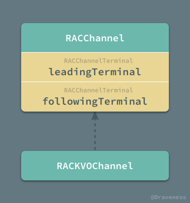</p>
<p>&#x5728; <code>RACKVOChannel</code> &#x63D0;&#x4F9B;&#x7684;&#x63A5;&#x53E3;&#x4E2D;&#xFF0C;&#x6211;&#x4EEC;&#x4E00;&#x822C;&#x90FD;&#x4F1A;&#x4F7F;&#x7528; <code>RACChannelTo</code> &#x6765;&#x89C2;&#x6D4B;&#x67D0;&#x4E00;&#x4E2A;&#x5BF9;&#x8C61;&#x7684;&#x5BF9;&#x5E94;&#x5C5E;&#x6027;&#xFF0C;&#x4E09;&#x4E2A;&#x53C2;&#x6570;&#x4F9D;&#x6B21;&#x4E3A;&#x5BF9;&#x8C61;&#x3001;&#x5C5E;&#x6027;&#x548C;&#x9ED8;&#x8BA4;&#x503C;&#xFF1A;</p>
<pre><code class="lang-objectivec">RACChannelTerminal *integerChannel = RACChannelTo(<span class="hljs-keyword">self</span>, integerProperty, @<span class="hljs-number">42</span>);
</code></pre>
<p>&#x800C; <code>RACChannelTo</code> &#x662F; <code>RACKVOChannel</code> &#x5934;&#x6587;&#x4EF6;&#x4E2D;&#x7684;&#x4E00;&#x4E2A;&#x5B8F;&#xFF0C;&#x4E0A;&#x9762;&#x7684;&#x8868;&#x8FBE;&#x5F0F;&#x53EF;&#x4EE5;&#x5C55;&#x5F00;&#x6210;&#x4E3A;&#xFF1A;</p>
<pre><code class="lang-objectivec">RACChannelTerminal *integerChannel = [[RACKVOChannel alloc] initWithTarget:<span class="hljs-keyword">self</span> keyPath:<span class="hljs-string">@&quot;integerProperty&quot;</span> nilValue:@<span class="hljs-number">42</span>][<span class="hljs-string">@&quot;followingTerminal&quot;</span>];
</code></pre>
<p>&#x8BE5;&#x5B8F;&#x521D;&#x59CB;&#x5316;&#x4E86;&#x4E00;&#x4E2A; <code>RACKVOChannel</code> &#x5BF9;&#x8C61;&#xFF0C;&#x5E76;&#x901A;&#x8FC7;&#x65B9;&#x62EC;&#x53F7;&#x7684;&#x65B9;&#x5F0F;&#x83B7;&#x53D6;&#x5176;&#x4E2D;&#x7684; <code>followingTerminal</code>&#xFF0C;&#x8FD9;&#x79CD;&#x83B7;&#x53D6;&#x7C7B;&#x5C5E;&#x6027;&#x7684;&#x65B9;&#x5F0F;&#x662F;&#x901A;&#x8FC7;&#x8986;&#x5199;&#x4EE5;&#x4E0B;&#x7684;&#x4E24;&#x4E2A;&#x65B9;&#x6CD5;&#x5B9E;&#x73B0;&#x7684;&#xFF1A;</p>
<pre><code class="lang-objectivec">- (RACChannelTerminal *)objectForKeyedSubscript:(<span class="hljs-built_in">NSString</span> *)key {
    RACChannelTerminal *terminal = [<span class="hljs-keyword">self</span> valueForKey:key];
    <span class="hljs-keyword">return</span> terminal;
}

- (<span class="hljs-keyword">void</span>)setObject:(RACChannelTerminal *)otherTerminal forKeyedSubscript:(<span class="hljs-built_in">NSString</span> *)key {
    RACChannelTerminal *selfTerminal = [<span class="hljs-keyword">self</span> objectForKeyedSubscript:key];
    [otherTerminal subscribe:selfTerminal];
    [[selfTerminal skip:<span class="hljs-number">1</span>] subscribe:otherTerminal];
}
</code></pre>
<p>&#x53C8;&#x7531;&#x4E8E;&#x8986;&#x5199;&#x4E86;&#x8FD9;&#x4E24;&#x4E2A;&#x65B9;&#x6CD5;&#xFF0C;&#x5728; <code>-setObject:forKeyedSubscript:</code> &#x65F6;&#x4F1A;&#x81EA;&#x52A8;&#x8C03;&#x7528; <code>-subscribe:</code> &#x65B9;&#x6CD5;&#x5B8C;&#x6210;&#x53CC;&#x5411;&#x7ED1;&#x5B9A;&#xFF0C;&#x6240;&#x4EE5;&#x6211;&#x4EEC;&#x53EF;&#x4EE5;&#x4F7F;&#x7528; <code>=</code> &#x6765;&#x5BF9;&#x4E24;&#x4E2A; <code>RACKVOChannel</code> &#x8FDB;&#x884C;&#x53CC;&#x5411;&#x7ED1;&#x5B9A;&#xFF1A;</p>
<pre><code class="lang-objectivec">RACChannelTo(view, property) = RACChannelTo(model, property);

[[RACKVOChannel alloc] initWithTarget:view keyPath:<span class="hljs-string">@&quot;property&quot;</span> nilValue:<span class="hljs-literal">nil</span>][<span class="hljs-string">@&quot;followingTerminal&quot;</span>] = [[RACKVOChannel alloc] initWithTarget:model keyPath:<span class="hljs-string">@&quot;property&quot;</span> nilValue:<span class="hljs-literal">nil</span>][<span class="hljs-string">@&quot;followingTerminal&quot;</span>];
</code></pre>
<p>&#x4EE5;&#x4E0A;&#x7684;&#x4E24;&#x79CD;&#x65B9;&#x5F0F;&#x662F;&#x5B8C;&#x5168;&#x7B49;&#x4EF7;&#x7684;&#xFF0C;&#x5B83;&#x4EEC;&#x90FD;&#x4F1A;&#x5728;&#x5BF9;&#x65B9;&#x7684;&#x5C5E;&#x6027;&#x66F4;&#x65B0;&#x65F6;&#x66F4;&#x65B0;&#x81EA;&#x5DF1;&#x7684;&#x5C5E;&#x6027;&#x3002;</p>
<p>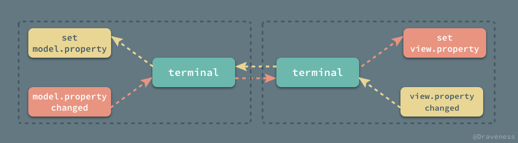</p>
<p>&#x5B9E;&#x73B0;&#x7684;&#x65B9;&#x5F0F;&#x5176;&#x5B9E;&#x4E0E; <code>RACChannel</code> &#x5DEE;&#x4E0D;&#x591A;&#xFF0C;&#x8FD9;&#x91CC;&#x4E0D;&#x4F1A;&#x6DF1;&#x5165;&#x5230;&#x4EE3;&#x7801;&#x4E2D;&#x8FDB;&#x884C;&#x4ECB;&#x7ECD;&#xFF0C;&#x4E0E; <code>RACChannel</code> &#x7684;&#x533A;&#x522B;&#x662F;&#xFF0C;<code>RACKVOChannel</code> &#x5E76;&#x6CA1;&#x6709;&#x66B4;&#x9732;&#x51FA; <code>leadingTerminal</code> &#x800C;&#x662F; <code>followingTerminal</code>&#xFF1A;</p>
<p>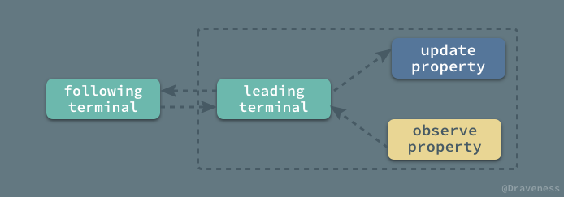</p>
<h2 id="racchannel-&#x5B9E;&#x6218;">RACChannel &#x5B9E;&#x6218;</h2>
<p>&#x8FD9;&#x4E00;&#x5C0F;&#x8282;&#x901A;&#x8FC7;&#x4E00;&#x4E2A;&#x7B80;&#x5355;&#x7684;&#x4F8B;&#x5B50;&#x6765;&#x89E3;&#x91CA;&#x5982;&#x4F55;&#x4F7F;&#x7528; <code>RACChannel</code> &#x8FDB;&#x884C;&#x53CC;&#x5411;&#x6570;&#x636E;&#x7ED1;&#x5B9A;&#x3002;</p>
<p>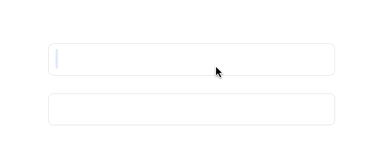</p>
<p>&#x5728;&#x6574;&#x4E2A;&#x89C6;&#x56FE;&#x4E0A;&#x6709;&#x4E24;&#x4E2A; <code>UITextField</code>&#xFF0C;&#x6211;&#x4EEC;&#x60F3;&#x8BA9;&#x8FD9;&#x4E24;&#x4E2A; <code>UITextField</code> <code>text</code> &#x7684;&#x503C;&#x76F8;&#x4E92;&#x7ED1;&#x5B9A;&#xFF0C;&#x5728;&#x4E00;&#x4E2A; <code>UITextField</code> &#x7F16;&#x8F91;&#x65F6;&#x4E5F;&#x6539;&#x53D8;&#x53E6;&#x4E00;&#x4E2A; <code>UITextField</code> &#x4E2D;&#x7684;&#x5185;&#x5BB9;&#xFF1A;</p>
<pre><code class="lang-objectivec"><span class="hljs-keyword">@property</span> (<span class="hljs-keyword">weak</span>, <span class="hljs-keyword">nonatomic</span>) <span class="hljs-keyword">IBOutlet</span> <span class="hljs-built_in">UITextField</span> *textField;
<span class="hljs-keyword">@property</span> (<span class="hljs-keyword">weak</span>, <span class="hljs-keyword">nonatomic</span>) <span class="hljs-keyword">IBOutlet</span> <span class="hljs-built_in">UITextField</span> *anotherTextField;
</code></pre>
<p>&#x5B9E;&#x73B0;&#x7684;&#x8FC7;&#x7A0B;&#x975E;&#x5E38;&#x7B80;&#x5355;&#xFF0C;&#x5206;&#x522B;&#x83B7;&#x53D6;&#x4E24;&#x4E2A; <code>UITextField</code> &#x7684; <code>rac_newTextChannel</code> &#x5C5E;&#x6027;&#xFF0C;&#x5E76;&#x8BA9;&#x5B83;&#x4EEC;&#x8BA2;&#x9605;&#x5F7C;&#x6B64;&#x7684;&#x5185;&#x5BB9;&#xFF1A;</p>
<pre><code class="lang-objectivec">[<span class="hljs-keyword">self</span>.textField.rac_newTextChannel subscribe:<span class="hljs-keyword">self</span>.anotherTextField.rac_newTextChannel];
[<span class="hljs-keyword">self</span>.anotherTextField.rac_newTextChannel subscribe:<span class="hljs-keyword">self</span>.textField.rac_newTextChannel];
</code></pre>
<p>&#x8FD9;&#x6837;&#x5728;&#x4F7F;&#x7528;&#x4E24;&#x4E2A;&#x6587;&#x672C;&#x8F93;&#x5165;&#x6846;&#x65F6;&#x5C31;&#x80FD;&#x8FBE;&#x5230;&#x9884;&#x671F;&#x7684;&#x6548;&#x679C;&#x4E86;&#xFF0C;&#x8FD9;&#x662F;&#x4E00;&#x4E2A;&#x975E;&#x5E38;&#x7B80;&#x5355;&#x7684;&#x4F8B;&#x5B50;&#xFF0C;&#x53EF;&#x4EE5;&#x5F97;&#x5230;&#x5982;&#x4E0B;&#x7684;&#x7ED3;&#x6784;&#x56FE;&#x3002;</p>
<p>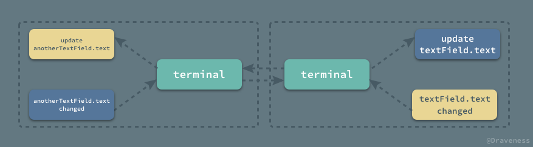</p>
<p>&#x4E24;&#x4E2A; <code>UITextField</code> &#x901A;&#x8FC7; <code>RACChannel</code> &#x4E92;&#x76F8;&#x5F71;&#x54CD;&#xFF0C;&#x5728;&#x5BF9;&#x65B9;&#x5C5E;&#x6027;&#x66F4;&#x65B0;&#x65F6;&#x540C;&#x65F6;&#x66F4;&#x65B0;&#x81EA;&#x5DF1;&#x7684;&#x5C5E;&#x6027;&#x3002;</p>
<h2 id="&#x603B;&#x7ED3;">&#x603B;&#x7ED3;</h2>
<p><code>RACChannel</code> &#x975E;&#x5E38;&#x9002;&#x5408;&#x4E8E;&#x89C6;&#x56FE;&#x548C;&#x6A21;&#x578B;&#x4E4B;&#x95F4;&#x7684;&#x53CC;&#x5411;&#x7ED1;&#x5B9A;&#xFF0C;&#x5728;&#x5BF9;&#x65B9;&#x7684;&#x5C5E;&#x6027;&#x6216;&#x8005;&#x72B6;&#x6001;&#x66F4;&#x65B0;&#x65F6;&#x53CA;&#x65F6;&#x901A;&#x77E5;&#x81EA;&#x5DF1;&#xFF0C;&#x8FBE;&#x5230;&#x9884;&#x671F;&#x7684;&#x6548;&#x679C;&#xFF1B;&#x6211;&#x4EEC;&#x53EF;&#x4EE5;&#x4F7F;&#x7528; ReactiveCocoa &#x4E2D;&#x5185;&#x7F6E;&#x7684;&#x5F88;&#x591A;&#x4E0E; <code>RACChannel</code> &#x6709;&#x5173;&#x7684;&#x65B9;&#x6CD5;&#xFF0C;&#x6765;&#x83B7;&#x53D6;&#x5F00;&#x7BB1;&#x5373;&#x7528;&#x7684; <code>RACChannelTerminal</code>&#xFF0C;&#x5F53;&#x7136;&#x4E5F;&#x53EF;&#x4EE5;&#x4F7F;&#x7528; <code>RACChannelTo</code> &#x901A;&#x8FC7; <code>RACKVOChannel</code> &#x6765;&#x5FEB;&#x901F;&#x7ED1;&#x5B9A;&#x7C7B;&#x4E0E;&#x7C7B;&#x7684;&#x5C5E;&#x6027;&#x3002;</p>
<h2 id="references">References</h2>
<ul>
<li><a href="https://spin.atomicobject.com/2015/05/04/bi-directional-data-bindings-reactivecocoa/" target="_blank">Bi-directional Data Bindings in ReactiveCocoa with RACChannel</a></li>
<li><a href="http://tech.meituan.com/ReactiveCocoaSignalFlow.html" target="_blank">ReactiveCocoa &#x6838;&#x5FC3;&#x5143;&#x7D20;&#x4E0E;&#x4FE1;&#x53F7;&#x6D41;</a></li>
</ul>
<blockquote>
<p>Github Repo&#xFF1A;<a href="https://github.com/draveness/iOS-Source-Code-Analyze" target="_blank">iOS-Source-Code-Analyze</a></p>
<p>Follow: <a href="https://github.com/Draveness" target="_blank">Draveness &#xB7; GitHub</a></p>
<p>Source: <a href="http://draveness.me/racchannel" target="_blank">http://draveness.me/racchannel</a></p>
</blockquote>

                                
                                </section>
                            
    </div>
    <div class="search-results">
        <div class="has-results">
            
            <h1 class="search-results-title"><span class='search-results-count'></span> results matching "<span class='search-query'></span>"</h1>
            <ul class="search-results-list"></ul>
            
        </div>
        <div class="no-results">
            
            <h1 class="search-results-title">No results matching "<span class='search-query'></span>"</h1>
            
        </div>
    </div>
</div>

                        </div>
                    </div>
                
            </div>

            
                
                
                <a href="RACCommand.html" class="navigation navigation-next navigation-unique" aria-label="Next page: RACCommand">
                    <i class="fa fa-angle-right"></i>
                </a>
                
            
        
    </div>

    <script>
        var gitbook = gitbook || [];
        gitbook.push(function() {
            gitbook.page.hasChanged({"page":{"title":"RACChannel","level":"1.1.5.22.1","depth":4,"next":{"title":"RACCommand","level":"1.1.5.22.2","depth":4,"path":"Source-Code-Analysis/ReactiveObjC/RACCommand.md","ref":"Source-Code-Analysis/ReactiveObjC/RACCommand.md","articles":[]},"previous":{"title":"ReactiveObjC","level":"1.1.5.22","depth":3,"ref":"","articles":[{"title":"RACChannel","level":"1.1.5.22.1","depth":4,"path":"Source-Code-Analysis/ReactiveObjC/RACChannel.md","ref":"Source-Code-Analysis/ReactiveObjC/RACChannel.md","articles":[]},{"title":"RACCommand","level":"1.1.5.22.2","depth":4,"path":"Source-Code-Analysis/ReactiveObjC/RACCommand.md","ref":"Source-Code-Analysis/ReactiveObjC/RACCommand.md","articles":[]},{"title":"RACDelegateProxy","level":"1.1.5.22.3","depth":4,"path":"Source-Code-Analysis/ReactiveObjC/RACDelegateProxy.md","ref":"Source-Code-Analysis/ReactiveObjC/RACDelegateProxy.md","articles":[]},{"title":"RACMulticastConnection","level":"1.1.5.22.4","depth":4,"path":"Source-Code-Analysis/ReactiveObjC/RACMulticastConnection.md","ref":"Source-Code-Analysis/ReactiveObjC/RACMulticastConnection.md","articles":[]},{"title":"RACScheduler","level":"1.1.5.22.5","depth":4,"path":"Source-Code-Analysis/ReactiveObjC/RACScheduler.md","ref":"Source-Code-Analysis/ReactiveObjC/RACScheduler.md","articles":[]},{"title":"RACSequence","level":"1.1.5.22.6","depth":4,"path":"Source-Code-Analysis/ReactiveObjC/RACSequence.md","ref":"Source-Code-Analysis/ReactiveObjC/RACSequence.md","articles":[]},{"title":"RACSignal","level":"1.1.5.22.7","depth":4,"path":"Source-Code-Analysis/ReactiveObjC/RACSignal.md","ref":"Source-Code-Analysis/ReactiveObjC/RACSignal.md","articles":[]},{"title":"RACSubject","level":"1.1.5.22.8","depth":4,"path":"Source-Code-Analysis/ReactiveObjC/RACSubject.md","ref":"Source-Code-Analysis/ReactiveObjC/RACSubject.md","articles":[]}]},"dir":"ltr"},"config":{"gitbook":"*","theme":"default","variables":{},"plugins":[],"pluginsConfig":{"highlight":{},"search":{},"lunr":{"maxIndexSize":1000000,"ignoreSpecialCharacters":false},"sharing":{"facebook":true,"twitter":true,"google":false,"weibo":false,"instapaper":false,"vk":false,"all":["facebook","google","twitter","weibo","instapaper"]},"fontsettings":{"theme":"white","family":"sans","size":2},"theme-default":{"styles":{"website":"styles/website.css","pdf":"styles/pdf.css","epub":"styles/epub.css","mobi":"styles/mobi.css","ebook":"styles/ebook.css","print":"styles/print.css"},"showLevel":false}},"structure":{"langs":"LANGS.md","readme":"README.md","glossary":"GLOSSARY.md","summary":"SUMMARY.md"},"pdf":{"pageNumbers":true,"fontSize":12,"fontFamily":"Arial","paperSize":"a4","chapterMark":"pagebreak","pageBreaksBefore":"/","margin":{"right":62,"left":62,"top":56,"bottom":56}},"styles":{"website":"styles/website.css","pdf":"styles/pdf.css","epub":"styles/epub.css","mobi":"styles/mobi.css","ebook":"styles/ebook.css","print":"styles/print.css"}},"file":{"path":"Source-Code-Analysis/ReactiveObjC/RACChannel.md","mtime":"2018-05-22T14:51:32.000Z","type":"markdown"},"gitbook":{"version":"3.2.3","time":"2019-04-23T11:29:51.711Z"},"basePath":"../..","book":{"language":""}});
        });
    </script>
</div>

        
    <script src="../../gitbook/gitbook.js"></script>
    <script src="../../gitbook/theme.js"></script>
    
        
        <script src="../../gitbook/gitbook-plugin-search/search-engine.js"></script>
        
    
        
        <script src="../../gitbook/gitbook-plugin-search/search.js"></script>
        
    
        
        <script src="../../gitbook/gitbook-plugin-lunr/lunr.min.js"></script>
        
    
        
        <script src="../../gitbook/gitbook-plugin-lunr/search-lunr.js"></script>
        
    
        
        <script src="../../gitbook/gitbook-plugin-sharing/buttons.js"></script>
        
    
        
        <script src="../../gitbook/gitbook-plugin-fontsettings/fontsettings.js"></script>
        
    

    </body>
</html>

